Numerical solvers available in janos
Pablo Almaraz, RElab
2026-05-23
Source:vignettes/solvers.Rmd
solvers.RmdOverview
janos separates the description of a dynamical system from the
numerical method used to solve it. Every solver is created by calling a
constructor function that returns a solver_spec object,
which is then passed to dyn_sim() alongside a
system_spec. This design means that the same model can be
solved by different algorithms without modifying the model definition,
and solver parameters can be tuned independently of the system
equations.
The solvers are organized below by the class of dynamical system they target. Within each family, the solvers are listed roughly from simplest to most specialized.
Stochastic simulation algorithms (SSA)
Approximate stochastic methods
Stochastic differential equation (SDE) solvers
Discrete-time and delay solvers
Solver summary table
| Solver | Family | Stepping | Order | Typical.use |
|---|---|---|---|---|
| solver_rk4() | ODE | Fixed | 4 | Non-stiff ODE |
| solver_rk45() | ODE | Adaptive | 4(5) | General ODE |
| solver_rosenbrock() | ODE | Adaptive | 4(3) | Stiff ODE |
| solver_ssa_direct() | SSA | Event-driven | Exact | Small CTMC |
| solver_ssa_nrm() | SSA | Event-driven | Exact | Medium CTMC |
| solver_ssa_mnrm() | SSA | Event-driven | Exact | Large CTMC |
| solver_tau_leap() | Approx. stochastic | Adaptive | ~1 | Large CTMC |
| solver_tau_leap_midpoint() | Approx. stochastic | Adaptive | ~2 | Large CTMC |
| solver_hybrid() | Approx. stochastic | Fixed + event | Mixed | Multi-scale CTMC |
| solver_euler_maruyama() | SDE | Fixed | 0.5 (strong) | Ito SDE |
| solver_milstein() | SDE | Fixed | 1.0 (strong) | Ito SDE |
| solver_jump_diffusion() | SDE | Fixed | 0.5 (strong) | SDE with jumps |
| solver_map() | Discrete/delay | Iteration | N/A | Iterated maps |
| solver_dde() | Discrete/delay | Fixed | 4 | Systems with memory |
| solver_pdmp() | PDMP | Fixed + event | 4 (ODE part) | Hybrid continuous-discrete |
| solver_mol() | Spatial | Fixed | 4 | 1D reaction-diffusion |
| solver_mol2d() | Spatial | Fixed | 4 | 2D reaction-diffusion |
| solver_rdme() | Spatial | Event-driven | Exact | Spatial stochastic |
Deterministic ODE solvers
These solvers integrate systems of ordinary differential equations \(\dot{y} = f(y, t)\), where the dynamics are fully deterministic. janos provides three ODE solvers spanning the spectrum from the simplest fixed-step scheme to an implicit method for stiff problems. In all three cases, the model equations are compiled from R formulas into C++ at first use and cached on disk, so subsequent simulations run at compiled speed.
Fixed-step RK4
| Aspect | Description |
|---|---|
| Order | 4 (classical Runge-Kutta) |
| Step control | Fixed time step dt; no error estimation |
| Model type | Deterministic ODE (rhs formulas) |
| Compiled | Yes (C++ via Rcpp) |
The classical fourth-order Runge-Kutta method evaluates the right-hand side four times per step, combining the results to achieve fourth-order accuracy in the local truncation error. Given a step size \(h\) and current state \(y_n\):
\[k_1 = f(t_n, y_n)\] \[k_2 = f(t_n + h/2, \; y_n + h \, k_1/2)\] \[k_3 = f(t_n + h/2, \; y_n + h \, k_2/2)\] \[k_4 = f(t_n + h, \; y_n + h \, k_3)\] \[y_{n+1} = y_n + \frac{h}{6}(k_1 + 2k_2 + 2k_3 + k_4)\]
The method is explicit, A-stable for linear problems within a bounded
stability region, and requires no matrix factorization. Its main
limitation is the absence of step-size control: the user must select
\(h\) small enough for the problem at
hand. The subsample parameter reduces output size by
storing every \(n\)th step.
solver_rk4() is the default solver in janos. It is
appropriate when the time scale of the dynamics is well understood and a
fixed step suffices.
Example: Lotka-Volterra predator-prey
lv <- system_spec(
rhs = list(
prey ~ alpha * prey - beta * prey * predator,
predator ~ delta * prey * predator - gamma * predator
),
state_names = c("prey", "predator"),
parms = list(alpha = 1.0, beta = 0.1, delta = 0.075, gamma = 1.5),
init = c(prey = 40, predator = 9)
)
result <- dyn_sim(lv, t_max = 80, solver = solver_rk4(dt = 0.01, subsample = 10))
#> ⚙ Simulating User-defined ODE system (compiled)
#> ¡ Integration: RK4, dt = 0.01
#> ¡ Duration: 80, discarding 30 transient
#> ⏱ Elapsed: 0.01 seconds
#> ✔ Simulation complete: 801 time points, 501 on attractor
plot(result, title = "Lotka-Volterra predator-prey")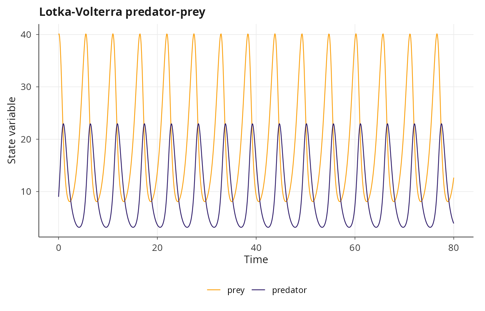
Adaptive Dormand-Prince RK4(5)
| Aspect | Description |
|---|---|
| Order | 4(5) embedded pair (Dormand-Prince) |
| Step control | Adaptive; step accepted when error norm <= 1 |
| Model type | Deterministic ODE (rhs formulas) |
| Compiled | Yes (C++ via Rcpp, FSAL optimization) |
The Dormand-Prince method is an embedded Runge-Kutta pair that produces both a fourth-order and a fifth-order solution from six function evaluations (seven nominally, but the “first same as last” optimization reuses the last evaluation as the first of the next step). The difference between the two estimates serves as a local error indicator. A step is accepted when the error satisfies:
\[\left\|\frac{y_5 - y_4}{\text{atol} + \text{rtol} \cdot |y_4|}\right\|_\infty \leq 1\]
When the error exceeds this bound, the step is rejected and retried with a smaller step. After acceptance, the next step size is estimated from the error ratio using a safety factor of 0.9, with a growth factor clamped to [0.2, 5.0].
This is the recommended solver for general-purpose ODE integration.
It automatically handles problems with varying time scales, eliminating
the need to manually tune the step size. The subsample
parameter here specifies the approximate interval between output points
(in time units, not step counts), since the internal steps are
variable.
Example: Rosenzweig-MacArthur predator-prey
The Rosenzweig-MacArthur model extends the classic Lotka-Volterra system with a type II functional response and logistic prey growth. For appropriate parameters it produces a stable limit cycle with pronounced amplitude variation, making adaptive stepping beneficial:
rma <- system_spec(
rhs = list(
prey ~ r * prey * (1 - prey / K) - a * prey * pred / (1 + a * h * prey),
pred ~ e * a * prey * pred / (1 + a * h * prey) - d * pred
),
state_names = c("prey", "pred"),
parms = list(r = 1.0, K = 1.0, a = 5.0, h = 0.5, e = 0.5, d = 0.3),
init = c(prey = 0.5, pred = 0.1)
)
result <- dyn_sim(rma, t_max = 100, solver = solver_rk45(),
discard_transient = 10)
#> ⚙ Simulating User-defined ODE system (compiled)
#> ¡ Integration: RK45 (adaptive)
#> ¡ Duration: 100, discarding 10 transient
#> ⏱ Elapsed: 0.01 seconds
#> ✔ Simulation complete: 1001 time points, 900 on attractor
plot(result, title = "Rosenzweig-MacArthur predator-prey")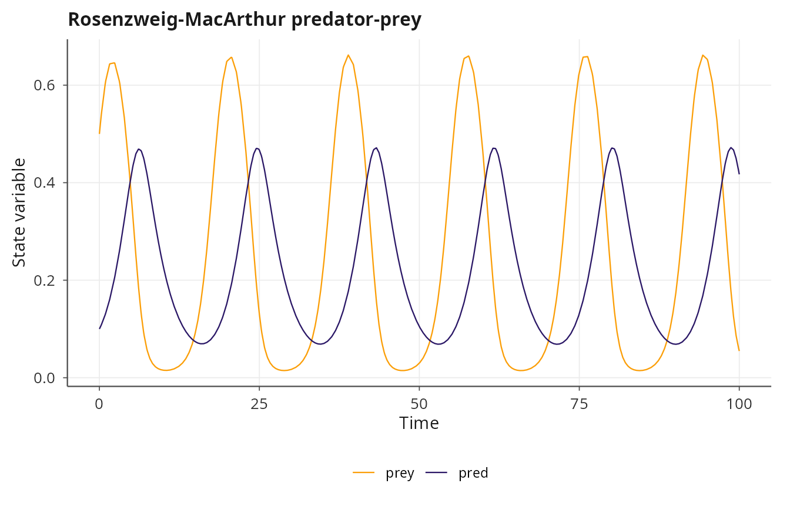
References
- Dormand, J. R., & Prince, P. J. (1980). A family of embedded Runge-Kutta formulae. Journal of Computational and Applied Mathematics, 6(1), 19-26. DOI: 10.1016/0771-050X(80)90013-3
- Rosenzweig, M. L. & MacArthur, R. H. (1963). Graphical representation and stability conditions of predator-prey interactions. American Naturalist, 97(895), 209-223. DOI: 10.1086/282272
Rosenbrock (Rodas3) for stiff systems
| Aspect | Description |
|---|---|
| Order | 4 with embedded order-3 error estimate |
| Step control | Adaptive; same error norm as RK45 |
| Model type | Deterministic ODE (rhs formulas) |
| Compiled | Yes (C++ via Rcpp, symbolic Jacobian) |
| Stiff-stable | L-stable (correct damping of fast modes) |
Stiff systems contain widely separated time scales; explicit methods like RK4 and RK45 require impractically small steps to maintain stability on such problems. Rosenbrock methods avoid this by solving a linear system at each stage rather than iterating to convergence as fully implicit methods do. The Rodas3 variant uses four stages per step and is L-stable, meaning it correctly damps arbitrarily fast modes without oscillation.
At each stage \(i\), the solver solves the linear system:
\[\left(\frac{I}{\gamma \, h} - J\right) k_i = f(y + \sum_j a_{ij} k_j) + \frac{J}{\gamma \, h} \sum_j c_{ij} k_j\]
where \(J = \partial f / \partial y\) is the Jacobian, \(h\) is the step size, and \(\gamma\) is a method coefficient. The Jacobian is generated symbolically from the model formulas at compile time, providing exact derivatives without finite-difference approximation. Adaptive step-size control uses the difference between the fourth-order and third-order solutions.
Example: Brusselator
The Brusselator is a model of an autocatalytic chemical reaction that exhibits limit-cycle oscillations with sharp, stiff transients in the \(y\) variable. With \(a = 1\) and \(b = 3\) the system lies beyond the Hopf bifurcation, and the relaxation-type spikes in \(y\) make explicit methods inefficient:
\[\dot{x} = a - (b + 1)x + x^2 y, \qquad \dot{y} = bx - x^2 y\]
brusselator <- system_spec(
rhs = list(
x ~ a - (b + 1) * x + x^2 * y,
y ~ b * x - x^2 * y
),
state_names = c("x", "y"),
parms = list(a = 1, b = 3),
init = c(x = 1.5, y = 1)
)
result <- dyn_sim(brusselator, t_max = 40,
solver = solver_rosenbrock())
#> ⚙ Simulating User-defined ODE system (Rosenbrock)
#> ¡ Integration: Rosenbrock (Rodas3, L-stable, order 4)
#> ¡ Duration: 40, discarding 30 transient
#> ⏱ Elapsed: 0.02 seconds
#> ✔ Simulation complete: 401 time points, 101 on attractor
plot(result, title = "Brusselator oscillator")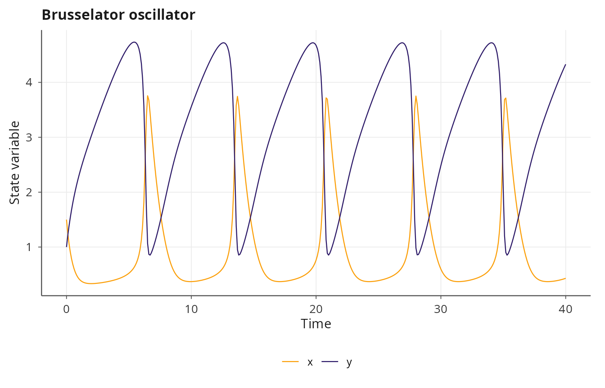
References
- Hairer, E. & Wanner, G. (1996). Solving Ordinary Differential Equations II: Stiff and Differential-Algebraic Problems. Springer. ISBN: 978-3-642-05221-7.
- Prigogine, I. & Lefever, R. (1968). Symmetry breaking instabilities in dissipative systems. II. Journal of Chemical Physics, 48(4), 1695-1700. DOI: 10.1063/1.1668896
Stochastic simulation algorithms (SSA)
These solvers produce exact sample paths of continuous-time Markov chains (CTMCs), where the state is an integer-valued population vector and transitions occur at random times according to propensity functions. The three SSA variants differ in computational cost per event but all generate statistically exact trajectories. Models are specified through stoichiometry matrices and propensity formulas rather than ODE right-hand sides.
The general form of a CTMC with \(M\) reaction channels is: given current state \(\mathbf{x}\), reaction \(j\) fires at rate \(a_j(\mathbf{x})\) (the propensity), changing the state by stoichiometry vector \(\mathbf{\nu}_j\). Between events, the time to the next reaction is exponentially distributed with rate \(a_0 = \sum_{j=1}^{M} a_j(\mathbf{x})\).
Gillespie direct method
| Aspect | Description |
|---|---|
| Exactness | Exact (no approximation) |
| Cost per event | O(M) where M is the number of reactions |
| Model type | CTMC (stoichiometry + propensities) |
| Compiled | Yes (C++ via Rcpp) |
The Gillespie direct method is the foundational exact SSA. At each step, all \(M\) propensities are computed, the time to the next event is drawn from \(\text{Exp}(a_0)\), and the firing reaction is selected with probability \(a_j / a_0\). The algorithm is conceptually simple and numerically robust, but its \(O(M)\) cost per step makes it inefficient for systems with many reaction channels.
Algorithm
- Compute all propensities \(a_j(\mathbf{x})\) and total rate \(a_0 = \sum_j a_j\).
- Draw waiting time \(\tau \sim \text{Exp}(a_0)\).
- Select reaction \(j\) with probability \(a_j / a_0\).
- Update state \(\mathbf{x} \leftarrow \mathbf{x} + \mathbf{\nu}_j\) and time \(t \leftarrow t + \tau\).
Example: SIR epidemic
sir <- system_spec(
stoichiometry = list(
infection = c(S = -1L, I = 1L, R = 0L),
recovery = c(S = 0L, I = -1L, R = 1L)
),
propensities = list(
infection ~ beta * S * I,
recovery ~ gamma * I
),
state_names = c("S", "I", "R"),
parms = list(beta = 0.001, gamma = 0.1),
init = c(S = 999L, I = 1L, R = 0L)
)
result <- dyn_sim(sir, t_max = 200, solver = solver_ssa_direct(seed = 123),
discard_transient = 0)
#> ⚙ Simulating CTMC reaction network (Gillespie direct)
#> ¡ Reactions: 2 (infection, recovery)
#> ¡ Duration: 200, seed = 123
#> ⏱ Elapsed: 0.01 seconds
#> ✔ Simulation complete: 86 time points, 1999 reactions fired
plot(result, title = "SIR epidemic (Gillespie direct)")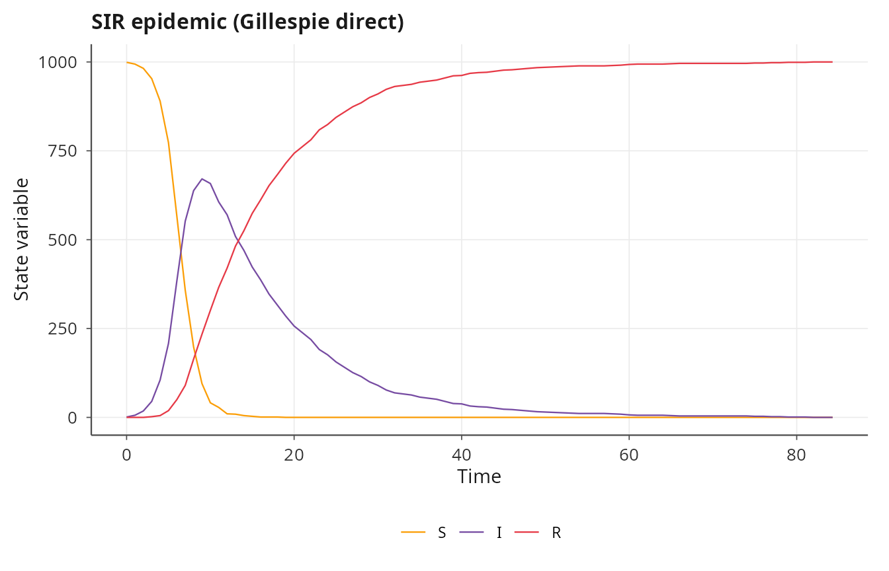
References
- Gillespie, D. T. (1977). Exact stochastic simulation of coupled chemical reactions. Journal of Physical Chemistry, 81(25), 2340-2361. DOI: 10.1021/j100540a008
Next-reaction method (NRM)
| Aspect | Description |
|---|---|
| Exactness | Exact (no approximation) |
| Cost per event | O(log M) via priority queue; only affected propensities recomputed |
| Model type | CTMC (stoichiometry + propensities) |
| Compiled | Yes (C++ via Rcpp, dependency graph) |
Gibson and Bruck’s next-reaction method maintains a priority queue of putative firing times, one per reaction channel. At each step, the reaction with the smallest putative time fires. After the state update, only the propensities in the dependency graph of the fired reaction are recomputed, and their putative times are rescaled rather than redrawn. This achieves \(O(\log M)\) cost per event and avoids the \(O(M)\) full-scan of the direct method.
The NRM uses a stale-entry priority queue: when a putative time entry is encountered whose stored time differs from the current putative time of that reaction, the entry is skipped. This avoids explicit deletion from the queue and keeps the implementation simple.
Algorithm
- For each reaction \(j\), draw initial putative time \(\tau_j \sim \text{Exp}(a_j)\) and insert into priority queue.
- Pop the minimum \(\tau_\mu\) from the queue; fire reaction \(\mu\).
- Update state \(\mathbf{x} \leftarrow \mathbf{x} + \mathbf{\nu}_\mu\).
- For each reaction \(j\) in the dependency graph of \(\mu\): recompute \(a_j\); if \(j = \mu\), draw new \(\tau_j\); otherwise rescale \(\tau_j \leftarrow t + (a_j^{\text{old}} / a_j^{\text{new}})(\tau_j - t)\).
Example
The sir model defined above can be solved with the NRM
by changing only the solver; the model specification is identical:
result <- dyn_sim(sir, t_max = 200, solver = solver_ssa_nrm(seed = 42))
#> ⚙ Simulating CTMC reaction network (Gibson-Bruck NRM)
#> ¡ Reactions: 2 (infection, recovery)
#> ¡ Duration: 200, seed = 42
#> ⏱ Elapsed: 0.01 seconds
#> ✔ Simulation complete: 120 time points, 1999 reactions fired
plot(result, title = "SIR epidemic (next-reaction method)")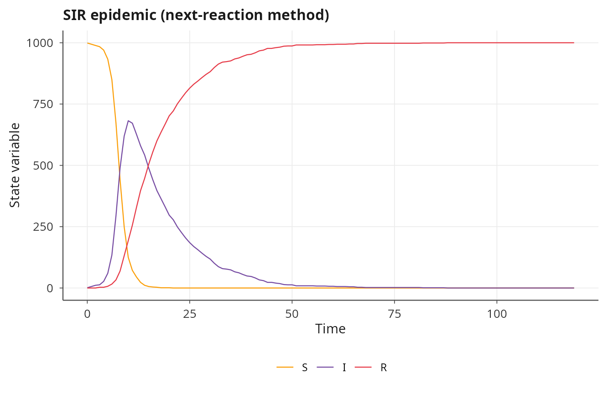
Because the three SSA methods use different internal RNG sequences, each produces a distinct stochastic realization of the same epidemic, but their statistical properties are identical.
References
- Gibson, M. A., & Bruck, J. (2000). Efficient exact stochastic simulation of chemical systems with many species and many channels. Journal of Physical Chemistry A, 104(9), 1876-1889. DOI: 10.1021/jp993732q
Modified next-reaction method (MNRM)
| Aspect | Description |
|---|---|
| Exactness | Exact (no approximation) |
| Cost per event | O(log M) via priority queue; improved numerical stability |
| Model type | CTMC (stoichiometry + propensities) |
| Compiled | Yes (C++ via Rcpp, dependency graph) |
Anderson’s modification of the NRM reformulates the internal bookkeeping in terms of unit-rate Poisson processes. Each reaction \(k\) maintains an internal time \(T_k\) and an integrated propensity \(P_k(t) = \int_0^t a_k(\mathbf{x}(s)) \, ds\). The next firing time for reaction \(k\) is the smallest \(t\) satisfying \(P_k(t) \geq T_k\), where \(T_k\) is incremented by independent unit-rate exponentials. This formulation avoids the rescaling step of the original NRM and provides improved numerical stability for systems where propensities vary over many orders of magnitude.
Example
result <- dyn_sim(sir, t_max = 200, solver = solver_ssa_mnrm(seed = 42))
#> ⚙ Simulating CTMC reaction network (Anderson MNRM)
#> ¡ Reactions: 2 (infection, recovery)
#> ¡ Duration: 200, seed = 42
#> ⏱ Elapsed: 0.01 seconds
#> ✔ Simulation complete: 67 time points, 1999 reactions fired
plot(result, title = "SIR epidemic (modified next-reaction)")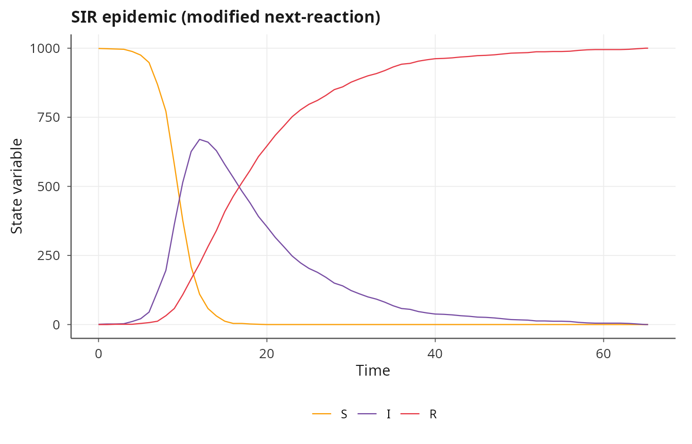
References
- Anderson, D. F. (2007). A modified next reaction method for simulating chemical systems with time dependent propensities and delays. Journal of Chemical Physics, 127, 214107. DOI: 10.1063/1.2799998
Approximate stochastic methods
When exact SSA is too slow because the system fires millions of events per unit time, approximate methods trade statistical exactness for computational speed. These solvers leap over multiple events in a single step, either by drawing Poisson-distributed reaction counts (tau-leap) or by approximating the discrete dynamics with a continuous Langevin equation (hybrid).
Adaptive tau-leap
| Aspect | Description |
|---|---|
| Accuracy | Approximate; error controlled by epsilon |
| Step control | Adaptive tau selection (Cao-Gillespie-Petzold) |
| Model type | CTMC (stoichiometry + propensities) |
| Compiled | Yes (C++ via Rcpp) |
Tau-leaping advances the system by a time increment \(\tau\) during which multiple reactions may fire. The number of firings of reaction \(j\) during \([\,t, t + \tau)\) is drawn from \(\text{Poisson}(a_j(\mathbf{x}) \cdot \tau)\). The key challenge is selecting \(\tau\) large enough for efficiency but small enough to keep the propensities approximately constant. The Cao-Gillespie-Petzold (2006) procedure selects:
\[\tau = \min_i \left\{ \frac{\max(\epsilon \, x_i / g_i, \; 1)}{|\mu_i|}, \;\; \frac{\max(\epsilon \, x_i / g_i, \; 1)^2}{\sigma_i^2} \right\}\]
where \(\mu_i\) and \(\sigma_i^2\) are the expected mean and
variance of the state change per unit time, \(x_i\) is the current population of species
\(i\), and \(g_i\) is the highest order of reactant
\(i\) across all reactions. When the
selected \(\tau\) is too small or
propensities are near zero, the algorithm falls back to
n_critical exact Gillespie steps.
Step rejection is enabled by default: if a leap produces negative
populations, the step is halved and retried up to
max_rejections times before falling back to exact SSA.
Example: birth-death process
bd <- system_spec(
stoichiometry = list(
birth = c(N = 1L),
death = c(N = -1L)
),
propensities = list(
birth ~ lambda,
death ~ mu * N
),
state_names = "N",
parms = list(lambda = 100, mu = 0.1),
init = c(N = 1000L)
)
result <- dyn_sim(bd, t_max = 200, solver = solver_tau_leap(seed = 42),
discard_transient = 0)
#> ⚙ Simulating CTMC reaction network (Adaptive tau-leap (CGP 2006))
#> ¡ Reactions: 2 (birth, death)
#> ¡ Duration: 200, seed = 42
#> ⏱ Elapsed: 0.01 seconds
#> ✔ Simulation complete: 202 time points, 40228 reactions fired, 46 leap steps
plot(result, title = "Birth-death process (tau-leap)")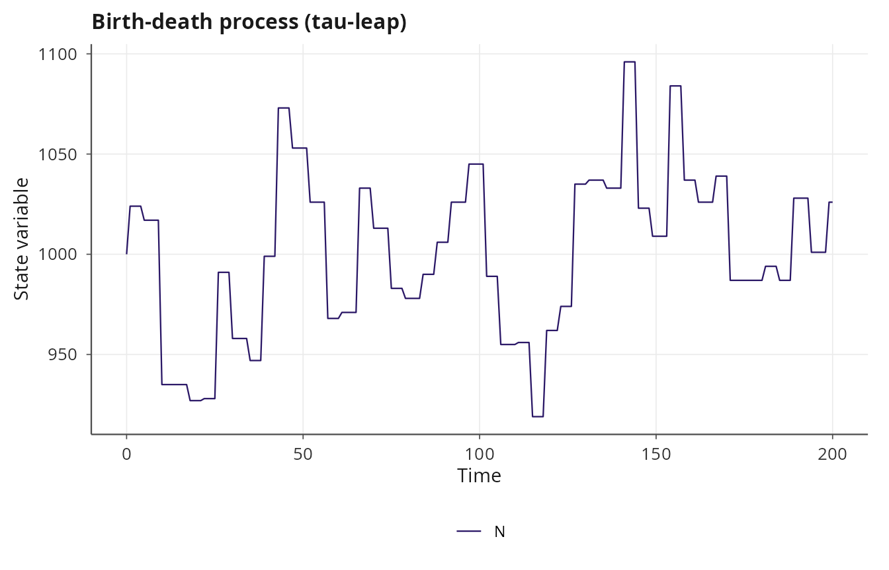
References
- Cao, Y., Gillespie, D. T., & Petzold, L. R. (2006). Efficient step size selection for the tau-leaping simulation method. Journal of Chemical Physics, 124, 044109. DOI: 10.1063/1.2187339
Midpoint tau-leap
| Aspect | Description |
|---|---|
| Accuracy | Approximate; one order less bias than explicit tau-leap |
| Step control | Adaptive tau selection (same as tau-leap) |
| Model type | CTMC (stoichiometry + propensities) |
| Compiled | Yes (C++ via Rcpp) |
The midpoint variant of tau-leaping evaluates propensities at the midpoint of the \(\tau\) interval rather than at the beginning. The algorithm first computes the deterministic drift to obtain a midpoint state:
\[\mathbf{x}_{\text{mid}} = \mathbf{x} + \frac{\tau}{2} \sum_j a_j(\mathbf{x}) \, \mathbf{\nu}_j\]
and then draws Poisson-distributed reaction counts using propensities evaluated at \(\mathbf{x}_{\text{mid}}\). This reduces the bias inherent in explicit tau-leaping by one order, at the cost of an additional propensity evaluation per step. The same adaptive tau selection and step rejection mechanism as the explicit tau-leap apply.
Example
result <- dyn_sim(bd, t_max = 200,
solver = solver_tau_leap_midpoint(seed = 42),
discard_transient = 0)
#> ⚙ Simulating CTMC reaction network (Midpoint tau-leap)
#> ¡ Reactions: 2 (birth, death)
#> ¡ Duration: 200, seed = 42
#> ⏱ Elapsed: 0.01 seconds
#> ✔ Simulation complete: 202 time points, 40143 reactions fired, 47 leap steps
plot(result, title = "Birth-death process (midpoint tau-leap)")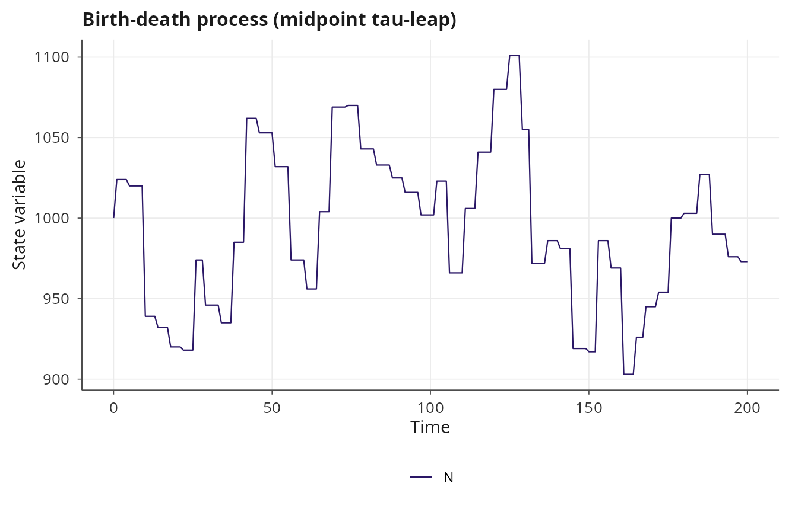
References
- Gillespie, D. T. (2001). Approximate accelerated stochastic simulation of chemically reacting systems. Journal of Chemical Physics, 115(4), 1716-1733. DOI: 10.1063/1.1378322
Hybrid SSA/CLE
| Aspect | Description |
|---|---|
| Accuracy | Approximate; fast reactions via CLE, slow reactions exact |
| Step control | Fixed CLE time step; event-driven slow reactions |
| Model type | CTMC (stoichiometry + propensities) |
| Compiled | Yes (C++ via Rcpp) |
The hybrid solver partitions reactions into fast and slow channels
based on a propensity threshold. Fast reactions, those with \(a_j \cdot \Delta t >
\texttt{threshold}\), are approximated by the chemical Langevin
equation (CLE), an Euler-Maruyama discretization of the diffusion limit.
Slow reactions are handled exactly by the Gillespie direct method. The
partition is updated periodically every
repartition_interval steps.
For each fast reaction \(j\), the CLE update within a time step \(\Delta t\) is:
\[\mathbf{x} \leftarrow \mathbf{x} + \mathbf{\nu}_j \left[ a_j(\mathbf{x}) \, \Delta t + \sqrt{a_j(\mathbf{x}) \, \Delta t} \; Z_j \right]\]
where \(Z_j \sim \mathcal{N}(0,1)\). Because the CLE produces continuous-valued state, the output trajectory contains doubles rather than integers.
This approach is particularly effective for multi-scale systems where some reactions fire orders of magnitude more frequently than others.
Example: gene expression with fast transcription
gene <- system_spec(
stoichiometry = list(
transcription = c(mRNA = 1L, protein = 0L),
translation = c(mRNA = 0L, protein = 1L),
mrna_decay = c(mRNA = -1L, protein = 0L),
protein_decay = c(mRNA = 0L, protein = -1L)
),
propensities = list(
transcription ~ k_tx,
translation ~ k_tl * mRNA,
mrna_decay ~ d_m * mRNA,
protein_decay ~ d_p * protein
),
state_names = c("mRNA", "protein"),
parms = list(k_tx = 5, k_tl = 5, d_m = 0.5, d_p = 0.1),
init = c(mRNA = 0L, protein = 0L)
)
result <- dyn_sim(gene, t_max = 100,
solver = solver_hybrid(dt_cle = 0.01, threshold = 10),
discard_transient = 0)
#> ⚙ Simulating CTMC reaction network (Hybrid SSA/CLE)
#> ¡ Reactions: 4 (transcription, translation, mrna_decay, protein_decay)
#> ¡ Duration: 100, seed = 42
#> ⏱ Elapsed: 0.01 seconds
#> ✔ Simulation complete: 102 time points, 6329 reactions fired, 6329 SSA steps, 16329 CLE steps
plot(result, title = "Gene expression with fast transcription")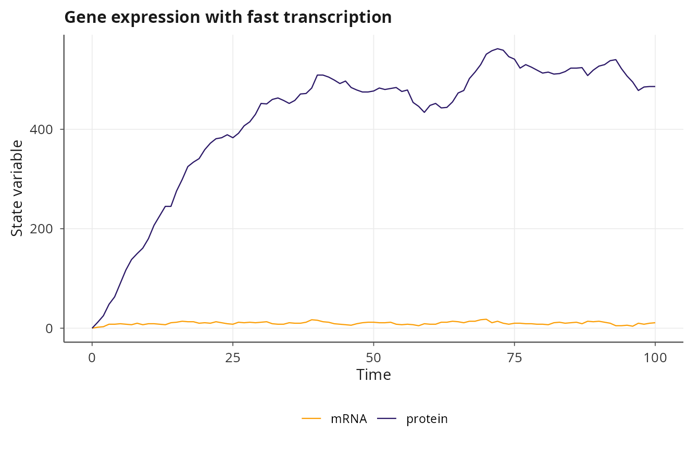
References
- Haseltine, E. L., & Rawlings, J. B. (2002). Approximate simulation of coupled fast and slow reactions for stochastic chemical kinetics. Journal of Chemical Physics, 117(15), 6959-6969. DOI: 10.1063/1.1505860
Stochastic differential equation (SDE) solvers
These solvers integrate Ito stochastic differential equations of the
general form \(d\mathbf{X} = f(\mathbf{X}) \,
dt + g(\mathbf{X}) \, d\mathbf{W}\), where \(d\mathbf{W}\) is a vector of independent
Wiener process increments. SDE models are specified in
system_spec() through both rhs (drift) and
diffusion formulas. janos also supports correlated noise,
Levy-driven SDEs, fractional Brownian motion, and colored noise via
noise_spec objects attached to the model.
Euler-Maruyama
| Aspect | Description |
|---|---|
| Strong order | 0.5 |
| Step control | Fixed time step |
| Model type | Ito SDE (rhs + diffusion formulas) |
| Compiled | Yes (C++ via Rcpp) |
The Euler-Maruyama method is the simplest numerical scheme for SDEs. At each step:
\[X_{n+1} = X_n + f(X_n) \, \Delta t + g(X_n) \, \Delta W_n\]
where \(\Delta W_n \sim \mathcal{N}(0, \Delta t)\). The method achieves strong order 0.5 and weak order 1.0 convergence. Despite its low order, it is often the method of choice because it is simple, robust, and compatible with all noise types supported by janos (correlated, Levy, fBm, colored).
Example: geometric Brownian motion
gbm <- system_spec(
rhs = list(x ~ mu * x),
diffusion = list(x ~ sigma * x),
state_names = "x",
parms = list(mu = 0.05, sigma = 0.3),
init = c(x = 1.0)
)
result <- dyn_sim(gbm, t_max = 5,
solver = solver_euler_maruyama(dt = 0.001, seed = 42),
discard_transient = 0)
#> ⚙ Simulating SDE system (compiled EULER_MARUYAMA)
#> ¡ dt = 0.001, seed = 42
#> ¡ Duration: 5, discarding 0 transient
#> ⏱ Elapsed: 0.01 seconds
#> ✔ Simulation complete: 5001 time points, 5001 on attractor
plot(result, title = "Geometric Brownian motion")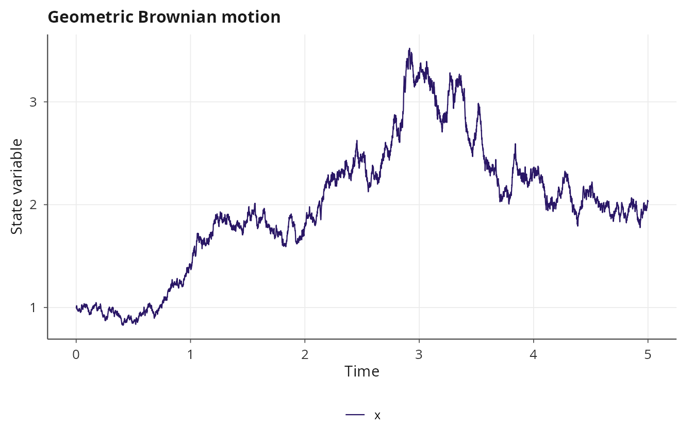
References
- Maruyama, G. (1955). Continuous Markov processes and stochastic equations. Rendiconti del Circolo Matematico di Palermo, 4, 48-90. DOI: 10.1007/BF02846028
- Kloeden, P. E. & Platen, E. (1992). Numerical Solution of Stochastic Differential Equations. Springer. ISBN: 978-3-540-54062-5.
Milstein
| Aspect | Description |
|---|---|
| Strong order | 1.0 |
| Step control | Fixed time step |
| Model type | Ito SDE (rhs + diffusion formulas, Gaussian noise only) |
| Compiled | Yes (C++ via Rcpp) |
The Milstein method adds a correction term to the Euler-Maruyama scheme that accounts for the Ito-Taylor expansion to the next order:
\[X_{n+1} = X_n + f(X_n) \, \Delta t + g(X_n) \, \Delta W_n + \frac{1}{2} \, g(X_n) \, g'(X_n) \left[(\Delta W_n)^2 - \Delta t\right]\]
The derivative \(g'(X)\) is
approximated by central finite difference with perturbation
dg_eps. This achieves strong order 1.0, doubling the
convergence rate compared to Euler-Maruyama. The improvement is most
pronounced when the diffusion coefficient varies significantly with the
state.
The Milstein method is restricted to Gaussian noise; it is blocked for Levy-driven, fractional Brownian motion, and colored noise models, where the Ito-Taylor expansion does not apply in the standard form.
Example: Cox-Ingersoll-Ross process
The CIR process is a mean-reverting model with state-dependent volatility, commonly used for interest rate modeling:
\[dX = \kappa(\theta - X) \, dt + \sigma \sqrt{X} \, dW\]
cir <- system_spec(
rhs = list(x ~ kappa * (theta - x)),
diffusion = list(x ~ sigma * sqrt(x)),
state_names = "x",
parms = list(kappa = 0.5, theta = 0.04, sigma = 0.1),
init = c(x = 0.04)
)
result <- dyn_sim(cir, t_max = 20,
solver = solver_milstein(dt = 0.001, seed = 42),
discard_transient = 0)
#> ⚙ Simulating SDE system (compiled MILSTEIN)
#> ¡ dt = 0.001, seed = 42
#> ¡ Duration: 20, discarding 0 transient
#> ⏱ Elapsed: 0.01 seconds
#> ✔ Simulation complete: 20001 time points, 20001 on attractor
plot(result, title = "Cox-Ingersoll-Ross process")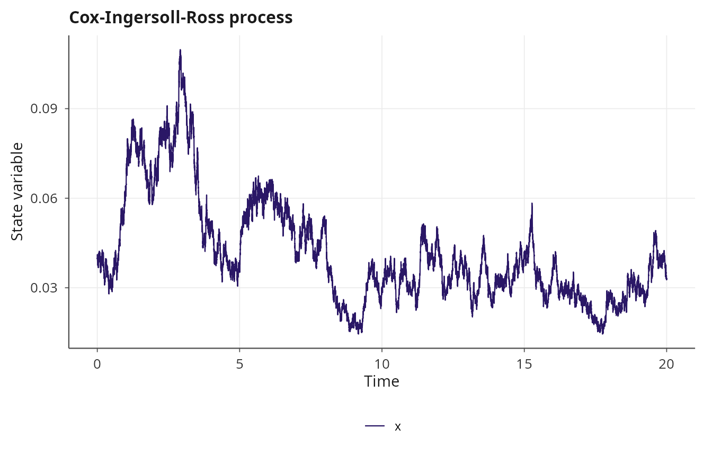
References
- Milstein, G. N. (1975). Approximate integration of stochastic differential equations. Theory of Probability and Its Applications, 19(3), 557-562. DOI: 10.1137/1119062
Jump-diffusion
| Aspect | Description |
|---|---|
| Strong order | 0.5 (diffusion part); exact jump simulation |
| Step control | Fixed time step |
| Model type | Ito SDE with Poisson jumps (rhs + diffusion + jumps) |
| Compiled | Yes (C++ via Rcpp) |
The jump-diffusion solver handles Ito processes augmented with Poisson jump channels:
\[d\mathbf{X} = f(\mathbf{X}) \, dt + g(\mathbf{X}) \, d\mathbf{W} + \sum_k h_k(\mathbf{X}, J_k) \, dN_k(t)\]
where \(N_k(t)\) are independent
Poisson processes with state-dependent intensity \(\lambda_k(\mathbf{X})\). At each time step,
the diffusion part is handled by Euler-Maruyama or Milstein (selectable
via the method argument), and then for each jump channel
the number of arrivals during \([t, t + \Delta
t)\) is drawn from \(\text{Poisson}(\lambda_k \cdot \Delta t)\).
Jump sizes can follow deterministic, normal, exponential, or uniform
distributions. An optional compensated flag subtracts the
jump compensator from the drift for the martingale property.
Example: Merton jump-diffusion
merton <- system_spec(
rhs = list(x ~ mu * x),
diffusion = list(x ~ sigma * x),
jumps = list(
x ~ list(intensity = ~ lambda,
size_distribution = "normal",
size_mean = ~ mu_J * x,
size_sd = ~ sigma_J * x)
),
state_names = "x",
parms = list(mu = 0.05, sigma = 0.2, lambda = 1.0,
mu_J = -0.05, sigma_J = 0.03),
init = c(x = 1.0)
)
result <- dyn_sim(merton, t_max = 5,
solver = solver_jump_diffusion(dt = 0.001, seed = 42),
discard_transient = 0)
#> ⚙ Simulating Jump-diffusion system (jump-diffusion, Euler-Maruyama)
#> ¡ Jump channels: 1
#> ¡ dt = 0.001, seed = 42
#> ¡ Duration: 5, discarding 0 transient
#> ⏱ Elapsed: 0.01 seconds
#> ✔ Simulation complete: 5001 time points, 5001 on attractor
plot(result, title = "Merton jump-diffusion")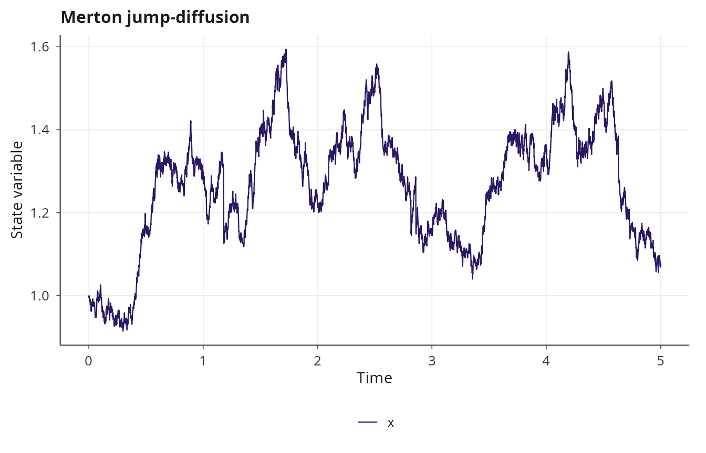
References
- Merton, R. C. (1976). Option pricing when underlying stock returns are discontinuous. Journal of Financial Economics, 3(1-2), 125-144. DOI: 10.1016/0304-405X(76)90022-2
- Cont, R., & Tankov, P. (2004). Financial Modelling with Jump Processes. Chapman and Hall/CRC. ISBN: 978-1584884132.
Discrete-time and delay solvers
These solvers handle two classes of systems that fall outside the standard ODE/SDE framework: deterministic iterated maps, where the state evolves in discrete steps, and delay differential equations, where the rate of change depends on the state at a past time.
Discrete map
| Aspect | Description |
|---|---|
| Order | Exact iteration y(n+1) = F(y(n)) |
| Step control | One map application per step |
| Model type | Discrete map (map formulas) |
| Compiled | Yes (C++ via Rcpp) |
The discrete map solver iterates \(y_{n+1}
= F(y_n, \theta)\) where \(F\)
is specified through map formulas in
system_spec(). All state variables are updated
simultaneously from the current state (not sequentially), matching the
mathematical convention for coupled maps. The t_max
argument to dyn_sim() is reinterpreted as the number of
iterations, and discard_transient as the number of initial
iterations to discard.
Example: logistic map
logistic <- system_spec(
map = list(x ~ r * x * (1 - x)),
state_names = "x",
parms = list(r = 3.9),
init = c(x = 0.1)
)
result <- dyn_sim(logistic, t_max = 500, solver = solver_map(),
discard_transient = 100)
#> ⚙ Iterating Discrete map (compiled)
#> ¡ Iterations: 500, discarding 100 transient
#> ⏱ Elapsed: 0.01 seconds
#> ✔ Simulation complete: 501 iterations stored, 401 on attractor
plot(result, title = "Logistic map (r = 3.9)")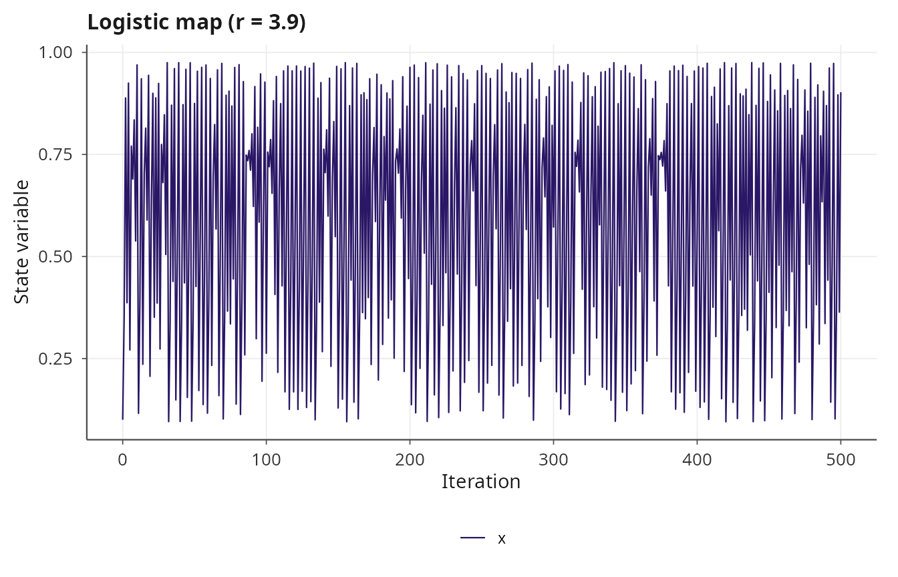
Delay differential equations (DDE)
| Aspect | Description |
|---|---|
| Order | 4 (RK4 with Hermite interpolation of history) |
| Step control | Fixed time step |
| Model type | DDE (rhs formulas + delays specification) |
| Compiled | Yes (C++ via Rcpp, circular history buffer) |
Delay differential equations incorporate dependence on past states, \(\dot{x}(t) = f(x(t), x(t - \tau))\). They arise naturally in population dynamics (maturation delays), control theory (feedback latency), and epidemiology (incubation periods).
janos implements DDE integration via fixed-step RK4 with a circular
history buffer. Past state values at arbitrary times are obtained by
cubic Hermite interpolation over stored \((t,
y, \dot{y})\) triples. The delay terms are declared in the
delays argument of system_spec() as named
lists specifying which state variable is delayed and by how much. The
delayed symbols then appear directly in the right-hand side
formulas.
Example: Mackey-Glass equation
The Mackey-Glass equation exhibits a transition from limit cycles to chaos as the delay \(\tau\) increases:
\[\dot{x}(t) = \frac{a \, x(t - \tau)}{1 + x(t - \tau)^c} - b \, x(t)\]
mg <- system_spec(
rhs = list(x ~ a * x_delay / (1 + x_delay^c) - b * x),
delays = list(x_delay = list(state = "x", tau = 17.0)),
state_names = "x",
parms = list(a = 0.2, b = 0.1, c = 10.0),
init = c(x = 0.9)
)
result <- dyn_sim(mg, t_max = 2000, solver = solver_dde(dt = 0.1),
discard_transient = 500)
#> ⚙ Simulating DDE system (compiled DDE)
#> ¡ Integration: RK4, dt = 0.1, τ_max = 17
#> ¡ Duration: 2000, discarding 500 transient
#> ⏱ Elapsed: 0.01 seconds
#> ✔ Simulation complete: 20001 time points, 15001 on attractor
plot(result, title = "Mackey-Glass equation")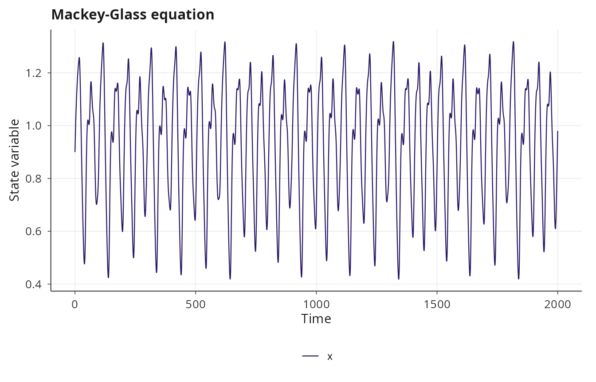
References
- Mackey, M. C. & Glass, L. (1977). Oscillation and chaos in physiological control systems. Science, 197(4300), 287-289. DOI: 10.1126/science.267326
Piecewise deterministic Markov processes
PDMP solver
| Aspect | Description |
|---|---|
| ODE order | 4 (RK4 between switching events) |
| Event generation | Lewis-Shedler thinning algorithm |
| Model type | PDMP (regimes + transitions + initial_regime) |
| Compiled | Yes (C++ via Rcpp, per-regime compilation) |
Piecewise deterministic Markov processes (PDMPs) combine continuous ODE dynamics with discrete random switching between regimes. Between events, the state evolves deterministically according to the current regime’s right-hand side. Regime transitions occur stochastically: the solver draws putative event times from an exponential distribution using the Lewis-Shedler thinning algorithm, integrates the ODE to that time, recomputes the actual transition rates, and accepts the event with probability \(\lambda_{\text{actual}} / \lambda_{\text{bound}}\). If accepted, the target regime is selected proportional to individual outgoing rates.
Models are specified through regimes (a named list of
formula lists, one per regime), transitions (a list of
from/to/rate specifications), and
initial_regime. The output includes a regime
column tracking the active regime at each time point.
Example: bacterial growth with dormancy switching
A bacterium switches between an active growth phase and a dormant survival phase at random times:
bact <- system_spec(
regimes = list(
active = list(x ~ r * x * (1 - x / K)),
dormant = list(x ~ -d * x)
),
transitions = list(
list(from = "active", to = "dormant", rate = ~ lambda_ad),
list(from = "dormant", to = "active", rate = ~ lambda_da)
),
state_names = "x",
parms = list(r = 0.5, K = 100, d = 0.01,
lambda_ad = 0.1, lambda_da = 0.05),
init = c(x = 50),
initial_regime = "active"
)
result <- dyn_sim(bact, t_max = 200, solver = solver_pdmp(seed = 42),
discard_transient = 0)
#> ⚙ Simulating PDMP system (PDMP, 2 regimes)
#> ¡ dt_ode = 0.01, seed = 42
#> ¡ Duration: 200, discarding 0 transient
#> ¡ Initial regime: active
#> ⏱ Elapsed: 0.01 seconds
#> ✔ Simulation complete: 201 time points, 15 regime transitions
plot(result, title = "Bacterial growth with dormancy switching")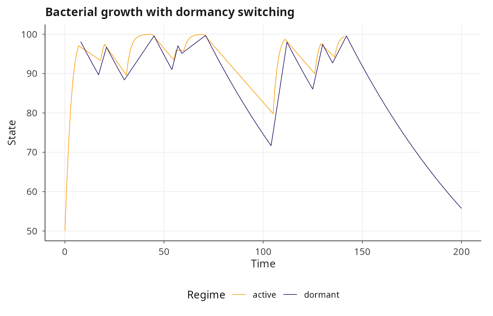
References
- Davis, M. H. A. (1984). Piecewise-deterministic Markov processes: A general class of non-diffusion stochastic models. Journal of the Royal Statistical Society, Series B, 46(3), 353-388.
- Lewis, P. A. W. & Shedler, G. S. (1979). Simulation of nonhomogeneous Poisson processes by thinning. Naval Research Logistics Quarterly, 26(3), 403-413. DOI: 10.1002/nav.3800260304
Spatial solvers
These solvers handle systems with explicit spatial structure: reaction-diffusion PDEs (both 1D and 2D) via the method of lines, and spatially discrete stochastic dynamics via the reaction-diffusion master equation.
Method of lines, 1D PDE
| Aspect | Description |
|---|---|
| Spatial order | 2 (central finite differences) |
| Temporal order | 4 (RK4) |
| Step control | Fixed time step (CFL stability warning) |
| Model type | 1D PDE (pde + spatial formulas) |
| Compiled | Yes (C++ via Rcpp) |
The method of lines (MOL) semi-discretizes the PDE by replacing
spatial derivatives with finite-difference approximations on a uniform
grid of \(N\) points with spacing \(\Delta x = (x_{\max} - x_{\min}) / (N -
1)\). The spatial operators d1x(u) and
d2x(u) are approximated by second-order central
differences:
\[\frac{\partial u}{\partial x}\bigg|_i \approx \frac{u_{i+1} - u_{i-1}}{2 \, \Delta x}, \qquad \frac{\partial^2 u}{\partial x^2}\bigg|_i \approx \frac{u_{i+1} - 2u_i + u_{i-1}}{\Delta x^2}\]
The resulting \(N\) coupled ODEs per
state variable are integrated with fixed-step RK4. The CFL stability
condition for pure diffusion with coefficient \(D\) requires \(\Delta t < \Delta x^2 / (2D)\); a
warning is issued if the user-specified dt exceeds this
bound.
Boundary conditions are specified per state variable: Dirichlet (fixed value), Neumann (zero-flux via ghost points), or periodic (wrap-around indexing).
Example: Fisher-KPP equation
The Fisher-KPP equation combines logistic growth with diffusion:
\[\frac{\partial u}{\partial t} = D \frac{\partial^2 u}{\partial x^2} + r \, u (1 - u)\]
fisher <- system_spec(
pde = list(u ~ D * d2x(u) + r * u * (1 - u)),
state_names = "u",
parms = list(D = 0.01, r = 1.0),
spatial = list(
domain = c(0, 10), n_grid = 201,
bc = list(u = list(type = "neumann", left = 0, right = 0))
),
init = function(x) ifelse(x < 1, 1.0, 0.0)
)
result <- dyn_sim(fisher, t_max = 15, solver = solver_mol(dt = 0.001),
discard_transient = 0, verbose = FALSE)
plot(result, title = "Fisher-KPP travelling wave")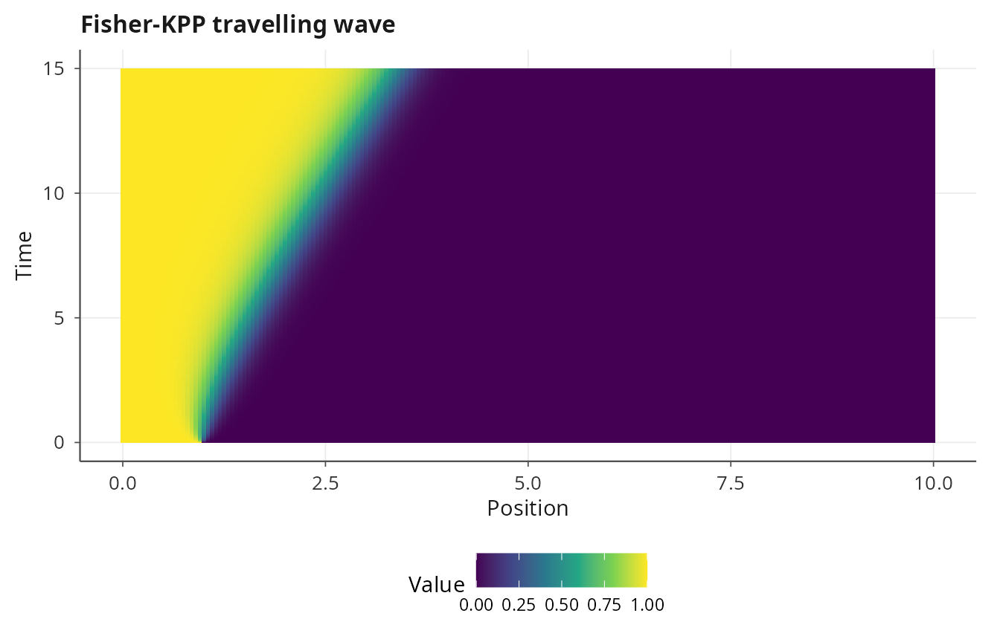
Method of lines, 2D PDE
| Aspect | Description |
|---|---|
| Spatial order | 2 (central finite differences on Cartesian grid) |
| Temporal order | 4 (RK4) |
| Step control | Fixed time step (2D CFL stability warning) |
| Model type | 2D PDE (pde + spatial with x,y domain) |
| Compiled | Yes (C++ via Rcpp) |
The 2D MOL solver extends the 1D method of lines to Cartesian grids
with \(N_x \times N_y\) points. Spatial
operators include d1x, d2x, d1y,
d2y, and the Laplacian lap (which expands to
d2x + d2y). The state vector layout is \(y[k \cdot N_x \cdot N_y + j \cdot N_x +
i]\) for state \(k\) at grid
point \((i, j)\).
The 2D CFL condition for diffusion with coefficient \(D\) and uniform grid spacing \(\Delta x = \Delta y\) is \(\Delta t < \Delta x^2 / (4D)\), which is twice as restrictive as the 1D condition.
Example: 2D heat equation
heat2d <- system_spec(
pde = list(u ~ D * lap(u)),
state_names = "u",
parms = list(D = 1.0),
init = function(x, y) sin(pi * x) * sin(pi * y),
spatial = list(
domain = list(x = c(0, 1), y = c(0, 1)),
n_grid = c(41, 41),
bc = list(u = list(
x = list(type = "dirichlet", left = 0, right = 0),
y = list(type = "dirichlet", left = 0, right = 0)
))
)
)
result <- dyn_sim(heat2d, t_max = 0.1,
solver = solver_mol2d(dt = 0.00005, subsample = 100),
discard_transient = 0, verbose = FALSE)
plot(result, title = "2D heat equation")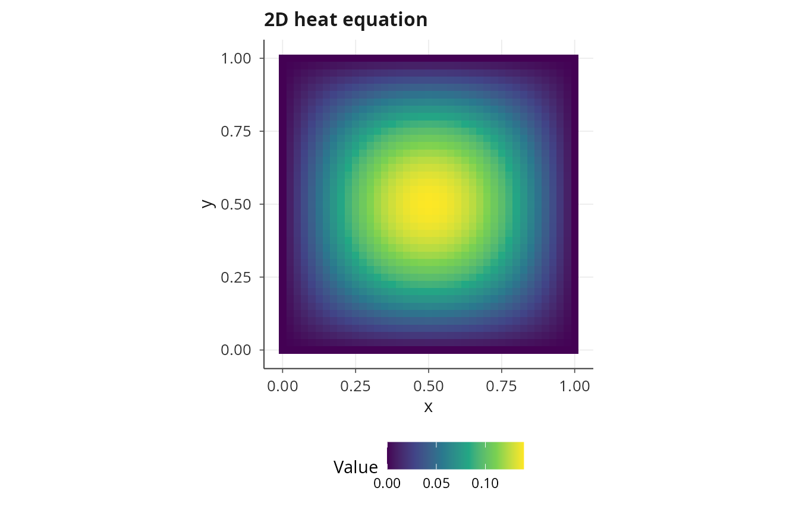
Reaction-diffusion master equation (RDME)
| Aspect | Description |
|---|---|
| Exactness | Exact (Gillespie direct over voxels/nodes) |
| Cost per event | O(total channels) = O(n_voxels * (n_reactions + 2 * n_species)) |
| Model type | CTMC + spatial (stoichiometry + propensities + diffusion_rates) |
| Compiled | Yes (C++ via Rcpp) |
| Topology | 1D lattice (solver_rdme) or arbitrary graph (adjacency matrix) |
The RDME discretizes the spatial domain into voxels (1D lattice) or nodes (arbitrary graph), each containing an independent copy of the reaction system coupled by nearest-neighbor diffusion. For species \(k\) in voxel \(i\) with count \(X_{k,i}\), the diffusion hop rate to an adjacent voxel is \(D_k \cdot X_{k,i} / \Delta x^2\). The Gillespie direct algorithm selects the next event (reaction or hop) across all voxels, with propensity recomputation restricted to affected voxels and their neighbors.
janos supports two RDME topologies. On a 1D lattice, the model is
specified with spatial$domain,
spatial$n_voxels, and spatial$diffusion_rates,
using solver_rdme(). On an arbitrary graph, the model
provides a spatial$adjacency matrix together with
spatial$diffusion_rates, and the same
solver_rdme() dispatches to the graph RDME compiler.
Utility functions lattice_graph(),
ring_graph(), star_graph(),
complete_graph(), and random_graph() generate
common topologies.
Example: spatial birth-death on a 1D lattice
spatial_bd <- system_spec(
stoichiometry = list(
birth = c(N = 1L),
death = c(N = -1L)
),
propensities = list(
birth ~ lambda,
death ~ mu * N
),
state_names = "N",
parms = list(lambda = 50, mu = 0.5, D_N = 0.5),
init = c(N = 100L),
spatial = list(
domain = c(0, 10), n_voxels = 50,
diffusion_rates = list(N = ~ D_N),
bc = list(type = "reflecting")
)
)
result <- dyn_sim(spatial_bd, t_max = 30, solver = solver_rdme(seed = 42),
discard_transient = 0)
#> ⚙ Simulating RDME reaction-diffusion system (RDME)
#> ¡ Grid: 50 voxels, dx = 0.2000
#> ¡ Reactions: 2 (birth, death)
#> ¡ BCs: reflecting, seed = 42
#> ¡ Duration: 30, discarding 0 transient
#> ⏱ Elapsed: 0.51 seconds
#> ✔ Simulation complete: 31 time points, 3844540 events
plot(result, title = "Spatial birth-death on a 1D lattice")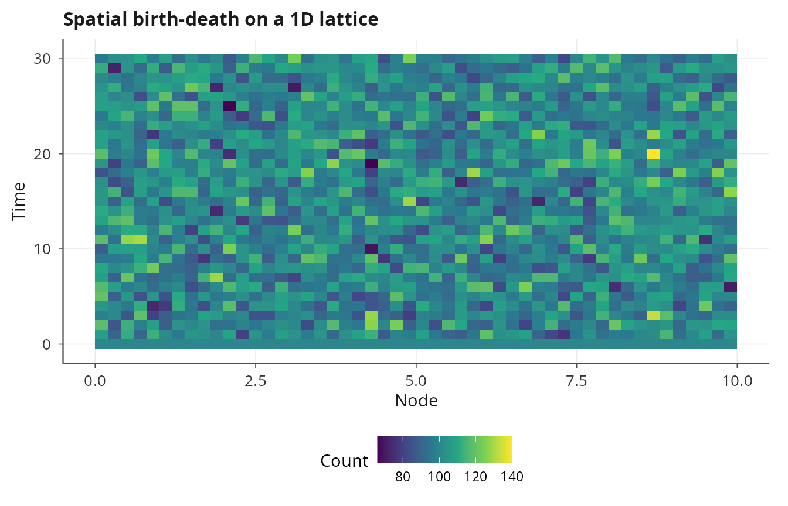
Example: stochastic dynamics on a ring graph
adj <- ring_graph(10)
graph_bd <- system_spec(
stoichiometry = list(
birth = c(N = 1L),
death = c(N = -1L)
),
propensities = list(
birth ~ lambda,
death ~ mu * N
),
state_names = "N",
parms = list(lambda = 50, mu = 0.5, D_N = 0.05),
init = c(N = 50L),
spatial = list(
adjacency = adj,
diffusion_rates = list(N = ~ D_N)
)
)
result <- dyn_sim(graph_bd, t_max = 30, solver = solver_rdme(seed = 42),
discard_transient = 0)
#> ⚙ Simulating Graph RDME reaction-diffusion system (graph RDME)
#> ¡ Nodes: 10, edges: 20
#> ¡ Reactions: 2 (birth, death)
#> ¡ Seed: 42
#> ¡ Duration: 30, discarding 0 transient
#> ⏱ Elapsed: 0.01 seconds
#> ✔ Simulation complete: 31 time points, 32470 events
plot(result, title = "Stochastic dynamics on a ring graph")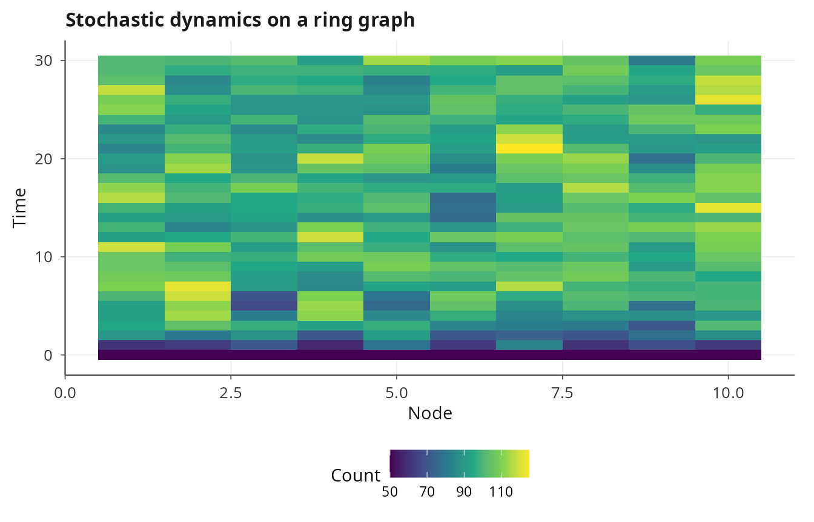
References
- Elf, J. & Ehrenberg, M. (2004). Spontaneous separation of bi-stable biochemical systems into spatial domains of opposite phases. Systems Biology, 1(2), 230-236. DOI: 10.1049/sb:20045021
- Isaacson, S. A. (2009). The reaction-diffusion master equation as an asymptotic approximation of diffusion to a small target. SIAM Journal on Applied Mathematics, 70(1), 77-111. DOI: 10.1137/070705039
Choosing a solver
The choice of solver is determined primarily by the mathematical class of the model. Within each class, the tradeoffs are:
For deterministic ODEs, solver_rk45()
is the recommended default; it handles varying time scales automatically
and requires no user tuning of the step size. Use
solver_rk4() when you need exactly reproducible, fixed-step
output (for example, for spectral analysis where uniform temporal
sampling matters). Use solver_rosenbrock() for stiff
systems where explicit methods would need impractically small steps.
For exact stochastic simulation,
solver_ssa_direct() is simplest and sufficient for systems
with fewer than ~20 reactions. As the number of reaction channels grows,
solver_ssa_nrm() and solver_ssa_mnrm() offer
\(O(\log M)\) scaling per event; MNRM
is preferred when propensities span many orders of magnitude.
For approximate stochastic simulation,
solver_tau_leap() provides the best balance of speed and
accuracy for large-population CTMCs. The midpoint variant reduces bias
at the cost of one extra propensity evaluation per step. The hybrid
solver is best when the system contains both fast and slow
reactions.
For SDEs, solver_euler_maruyama() is
the universal choice that works with all noise types.
solver_milstein() doubles the strong convergence rate but
is restricted to Gaussian noise. solver_jump_diffusion()
extends the SDE framework with Poisson jump channels.
For spatial systems, the choice between PDE
(solver_mol, solver_mol2d) and stochastic
(solver_rdme) depends on whether the continuum or
discrete-particle description is appropriate for the application.